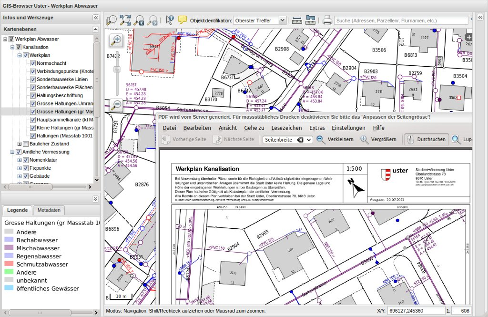

Servidor QGIS¶
Servicio Web¶
Servidor de QGIS proporciona mapa y servicios de funciones web (WMS y WFS) utilizando las mismas bibliotecas como la aplicación de escritorio de GIS (QGIS). Mapas y plantillas de impresión creadas en el escritorio QGIS pueden ser publicadas como mapas de web simplemente copiando el archivo de proyecto QGIS en el directorio del servidor. Los mapas resultantes de la web exactamente el mismo aspecto como en el escritorio. QGIS servidor generalmente se ejecuta como CGI/FastCGI módulo en el servidor web Apache.
{kind=link}
Características Principales¶
- Web Map Service (WMS) - imágenes
- OGC Servicio Web de Teselas de Mapas (WMTS) 1.0.0
- Servicio de la característica de Web (WFS) - vectores
- Salida PDF integrado
- Creación de mapa WYSIWYG con QGIS
- Simbolización cartográfica avanzada
- Soportes Descriptor de capa de Estilo (SLD)
- Parámetros adicionales como FILTER, SELECTION, DPI
Estándares implementados¶
- Web Map Service (WMS) 1.1.1, 1.3.0 de OGC
- OGC Servicio Web de Teselas de Mapas (WMTS) 1.0.0
- OGC: Web característica Service (WFS) 1.0.0 y WFS transaccionales (WFS-T) 1.0.0
- Servicio de cobertura de la Web (WCS) de OGC
- OGC: Descriptor de Estilos de Capa (SLD) 1.0
Detalles¶
Sitio web: https://www.qgis.org/en/site/
Licencia: GPL
Versión de software: 3.16.3
Plataformas compatibles: Windows y Linux
Soporte comercial: https://www.qgis.org/en/site/forusers/commercial_support.html